1ثبّت البرامج المطلوبة
- Node.js الإصدار 22 من nodejs.org
- PostgreSQL الإصدار 16 (قاعدة البيانات) من postgresql.org
- انسخ المشروع من GitHub، الفرع ccr-d596de12-b4bqim، ثم ادخل مجلد uyt
هذا الدليل في جزأين: كيف تشغّل النظام على جهازك، ثم كيف يستخدمه المطعم كل يوم من أول تسجيل حتى تقييم العميل. كل الصور لقطات حقيقية من النظام وهو يعمل.
للمبرمج أو المسؤول التقني. يكفي جهاز كمبيوتر واحد للتجربة.
أنشئ مستخدمًا اسمه uyt بكلمة مرور uyt، وقاعدتين: واحدة للعمل وواحدة للاختبارات.
createuser -P uyt # اكتب كلمة المرور: uyt
createdb -O uyt uyt
createdb -O uyt uyt_testانسخ ملف الإعدادات، وضع في JWT_SECRET نصًا عشوائيًا طويلًا (32 حرفًا على الأقل). أمر seed:demo اختياري: ينشئ مطعمًا تجريبيًا عليه علامة DEMO مع بيانات 30 يومًا لتجربة الإحصائيات.
cd server cp .env.example .env npm install npm run migrate # إنشاء الجداول npm run seed:demo -- --history # اختياري: مطعم تجريبي npm run dev # يعمل على http://localhost:4000
عند التشغيل يطبع الخادم حالة كل قناة إشعارات (FCM، APNs، Web Push). لتفعيل إشعارات المتصفح نفّذ npx web-push generate-vapid-keys وضع المفتاحين في .env.
في نافذة أوامر ثانية، مع ترك الخادم يعمل:
cd web
npm install
npm run dev # يعمل على http://localhost:5173افتح المتصفح على هذه العناوين:
| الصفحة | العنوان | الدخول |
|---|---|---|
| الصفحة الرئيسية | localhost:5173 | — |
| لوحة المالك (تجريبي) | localhost:5173/login | demo@uyt.app / Demo1234 |
| لوحة الكاشير (تجريبي) | localhost:5173/login | cashier@uyt.app / Demo1234 |
| صفحة العميل (تجريبي) | localhost:5173/s/demo | بدون دخول |
| تسجيل مطعم جديد | localhost:5173/register | — |
اعرف عنوان IP لجهاز الكمبيوتر (مثل 192.168.1.10)، ثم افتح من الموبايل http://192.168.1.10:5173/s/demo. بهذا ترى تجربة العميل الحقيقية: الكاشير على الكمبيوتر والعميل على الموبايل.
الكاميرا وإشعارات المتصفح في الخلفية تحتاج HTTPS. على الشبكة المحلية تعمل الصفحة والتنبيه داخلها، أما الإشعار والصفحة مغلقة فيعمل بعد النشر على نطاق بشهادة HTTPS.
cd mobile npm install EXPO_PUBLIC_API_URL=http://192.168.1.10:4000 EXPO_PUBLIC_WEB_URL=http://192.168.1.10:5173 npx expo start
امسح الكود الذي يظهر بتطبيق Expo Go على موبايلك. لبناء نسخة المتجر (APK و AAB للأندرويد، و IPA للآيفون) اتبع ملف docs/RELEASE.md؛ يحتاج حساب Expo وحساب Apple Developer وحساب Google Play.
cp .env.example .env # ضع كلمات المرور والمفاتيح
docker compose up -d --buildضع أمامه شهادة HTTPS (مثل Cloudflare أو Caddy)، واربط نطاقك. الجداول تُنشأ تلقائيًا عند أول تشغيل.
لصاحب المطعم والكاشير. الإعداد مرة واحدة (الخطوات 1 إلى 3)، ثم العمل اليومي (4 إلى 8).
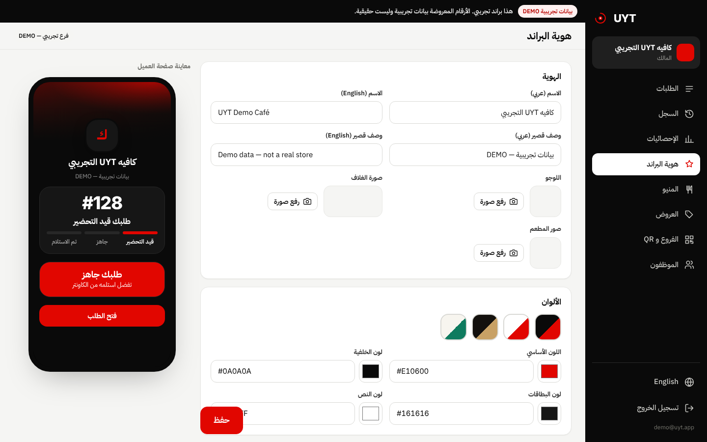
للأمان: فعّل خيار «طلب كود من 4 أرقام» إذا أردت ألا يستطيع أحد ربط طلب ليس له. يظهر الكود للكاشير بجوار كل طلب ليعطيه للعميل.
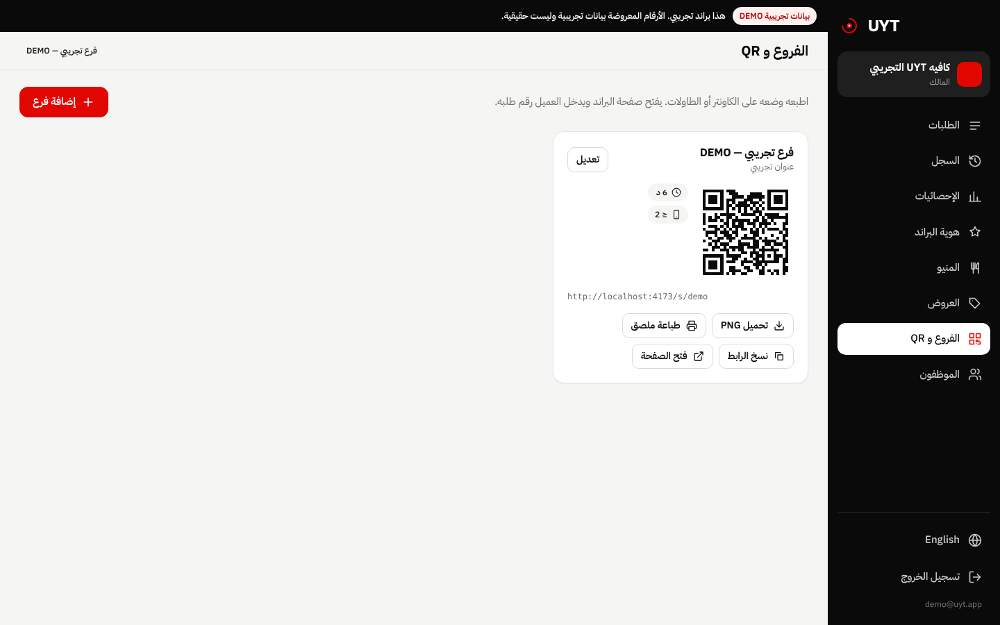
يمكنك إيقاف أي موظف بزر «إيقاف» فيخرج من النظام فورًا. أضف أيضًا المنيو والعروض من صفحتي «المنيو» و«العروض» لتظهر للعميل أثناء الانتظار.
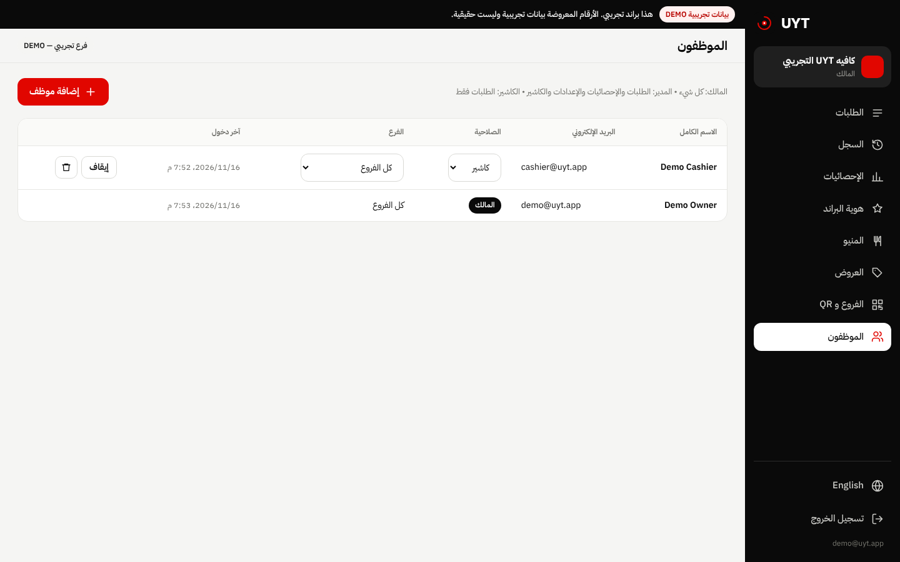
وقت التحضير يُحسب تلقائيًا من متوسط آخر الطلبات، ويمكن اختيار 3 أو 5 أو 10 أو 15 دقيقة يدويًا.
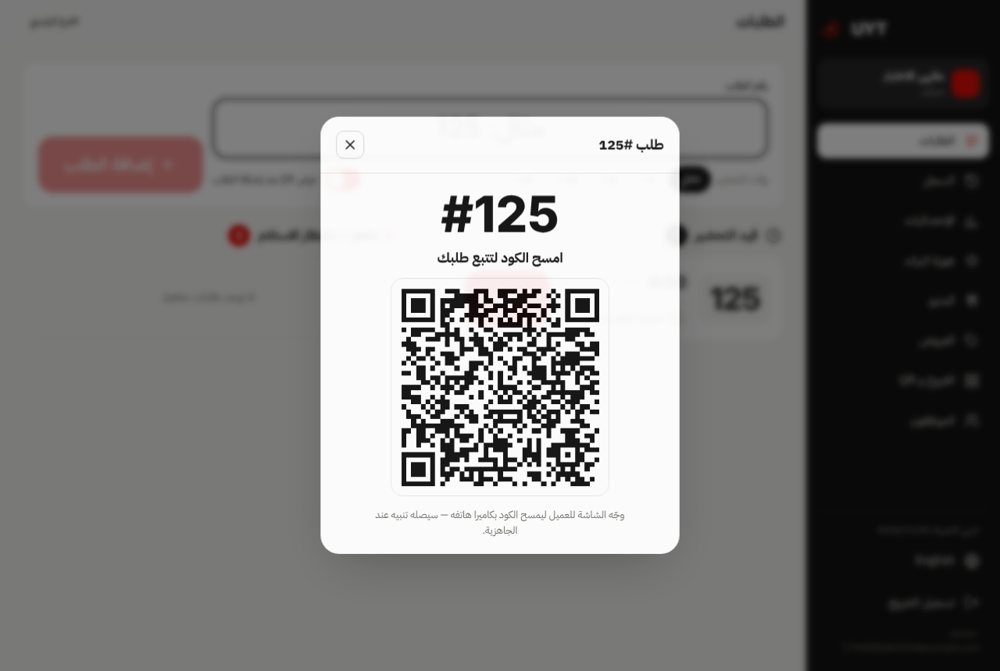
العميل لا يحتاج تثبيت أي تطبيق. له طريقتان:
تظهر له صفحة بهوية المطعم فيها رقم طلبه، وعدّاد للوقت المتوقع، وعدد الطلبات قبله. تحتها العروض والمنيو وحسابات السوشيال والموقع على الخريطة.
يضغط العميل «فعّل التنبيهات» ليصله الإشعار حتى لو أغلق الصفحة. على iPhone يجب أولًا إضافة الصفحة للشاشة الرئيسية (مشاركة ← إضافة إلى الشاشة الرئيسية).
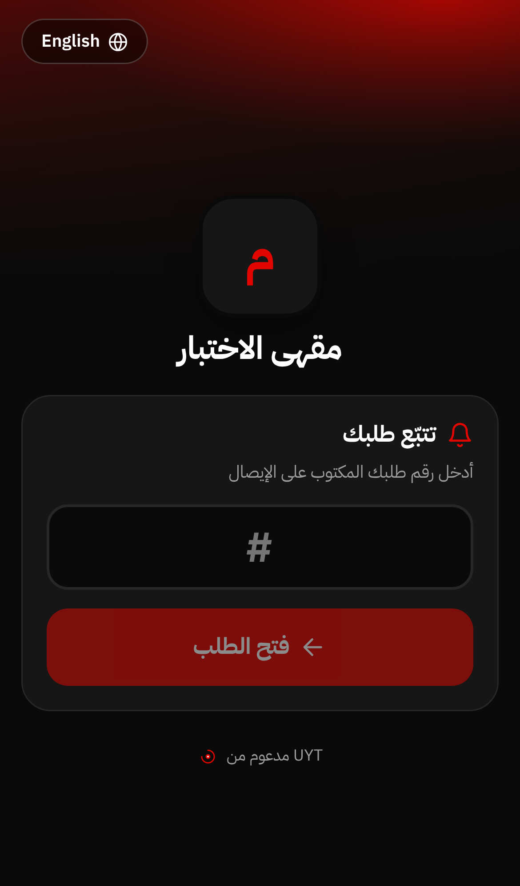
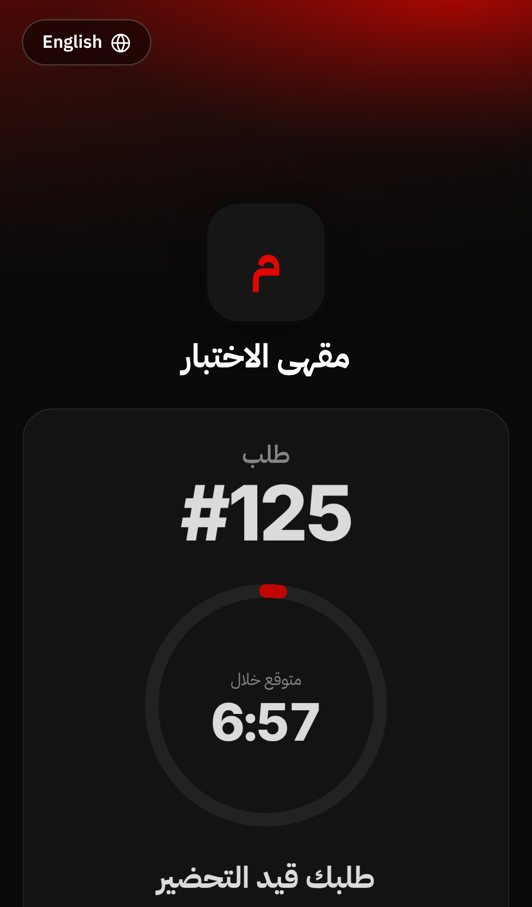
الشاشة مقسومة لعمودين:
على كل طلب علامات توضح الحالة: «الهاتف مربوط» أو «لم يُربط هاتف بعد»، و«التنبيهات مفعّلة»، و«وصل التنبيه» بعد وصول الإشعار فعلًا.
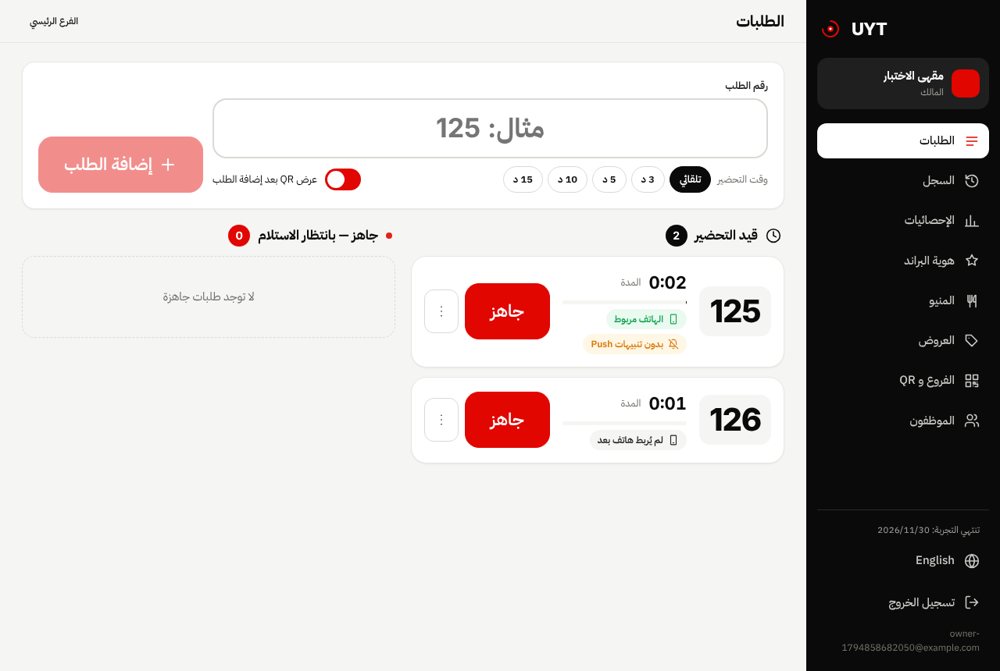
إذا تأخر العميل يظهر على الطلب «متأخر». اضغط زر الجرس 🔔 لإرسال تذكير، أو اترك التذكير التلقائي يعمل. الضغط على «جاهز» مرتين لا يرسل الإشعار مرتين.
النظام يحترم إعدادات الموبايل: إذا كان الموبايل على الصامت يصل الإشعار والاهتزاز بدون صوت.
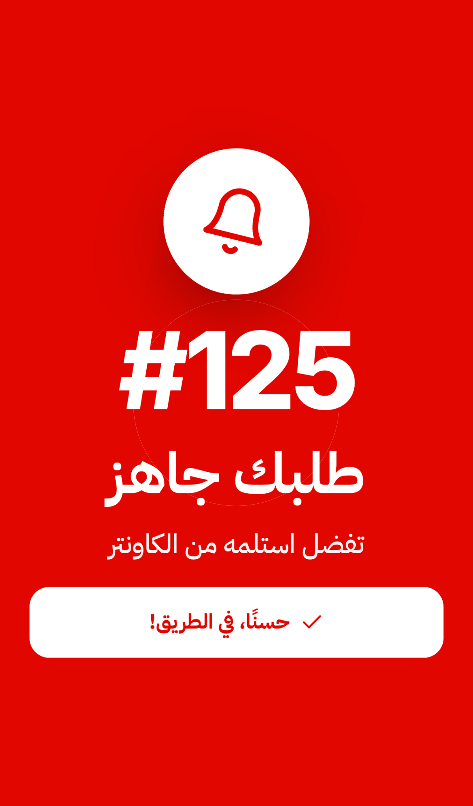
لحذف طلب أُضيف بالخطأ: زر النقاط الثلاث ⋮ بجوار الطلب ← «حذف الطلب». ومن نفس القائمة: عرض QR الطلب مرة أخرى، أو «فك ربط الهاتف» إذا ربط شخص خطأ.
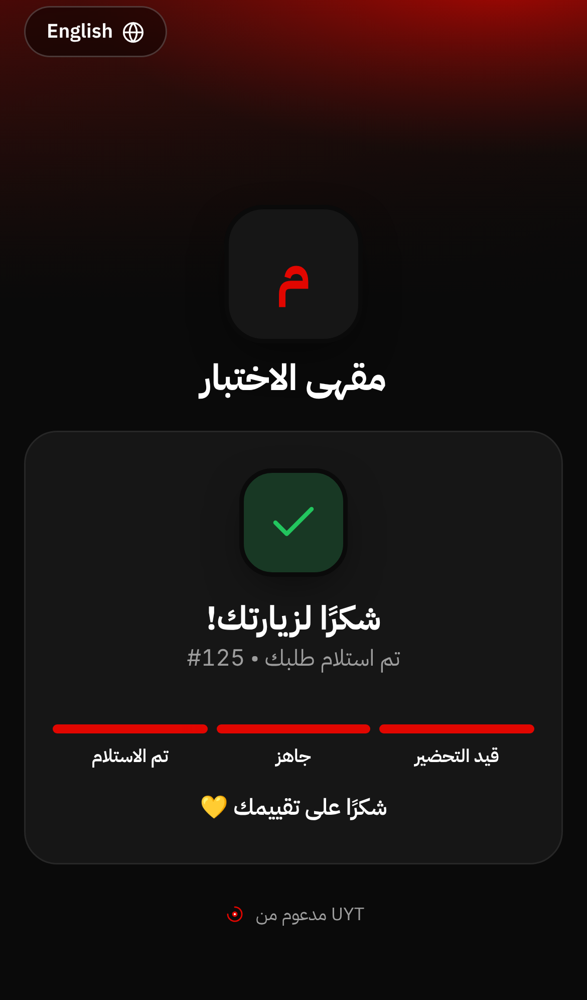
يظهر شريط أحمر أعلى الشاشة. يستطيع الكاشير الاستمرار في إضافة الطلبات والضغط على «جاهز» و«تم التسليم»، وتظهر الطلبات بعلامة «بانتظار المزامنة». عند عودة الإنترنت تُرسل كلها تلقائيًا بالترتيب.
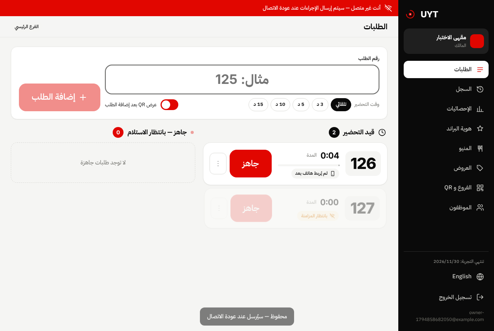
نفس الشاشة تعمل على موبايل الكاشير: الخانة والزر بالعرض الكامل، والقائمة في الأسفل (الطلبات، السجل، المزيد).
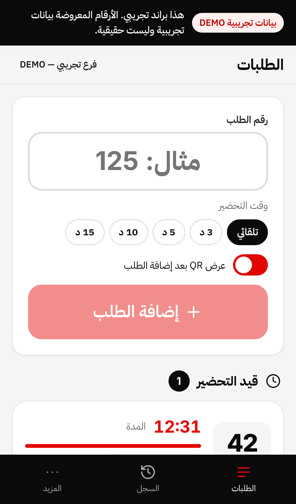
صفحة «السجل» تعرض كل طلب: وقت إنشائه، ومدة تحضيره، والوقت بين التنبيه والاستلام، وهل ربط العميل هاتفه، وتقييمه. ابحث برقم الطلب أو صفِّ حسب الحالة.
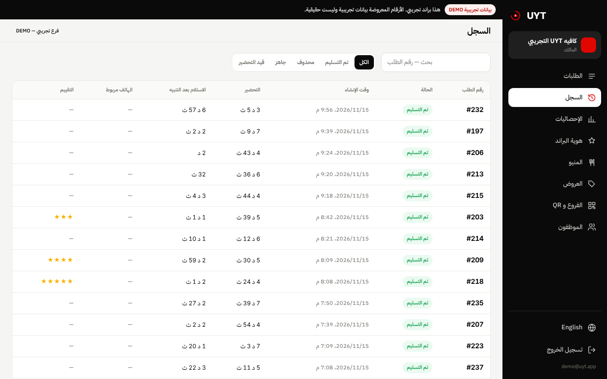
اختر الفترة (اليوم، 7 أيام، 30 يومًا، هذا الشهر، 3 أشهر، أو تاريخًا مخصصًا) والفرع. كل رقم يقارن نفسه بالفترة السابقة بسهم أخضر أو أحمر:
الأرقام في الصورة من المطعم التجريبي (DEMO) وليست حقيقية.
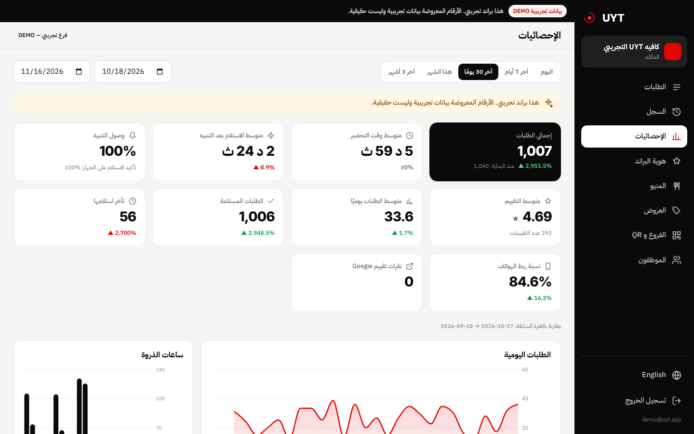